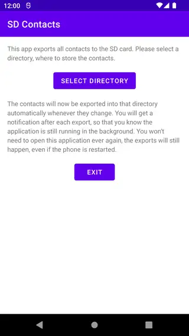

SD Contacts
تواصل ومراسلة
This app is meant for users that don't want to synchronize their contacts online, but want to keep them local to the phone. Though there is a problem, if you brick your phone, you might lose all your contacts. With this app, you will have a backup of your contacts stored on the SD card. You can take
✓ ترخيص مفتوح (Apache-2.0) · آخر تحديث: 2022-01-14
1.0.0الإصدار
1.6 MBالحجم
Apache-2.0الرخصة
Open in Kanzتحميل APK (1.6 MB)
Download APK
SHA-256: 7de17f0339afa6160f9b7b93a864ed199dcf7256f2d8dde72d0341a0d4496e63

امسح الكود لفتح صفحة التطبيق
Scan to open this app page
لو كنز مش متثبت عندك: نزّل متجر كنز.
Not installed? Get the Kanz store.